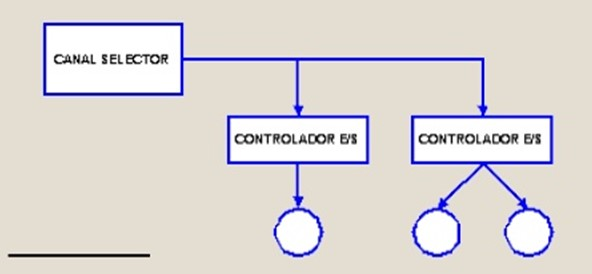

1.2.3.5 Canales y procesadores de Entrada y Salida
Los canales de E/S son una mejora de los controladores de DMA. Pueden ejecutar instrucciones que leen directamente de memoria. Eso permite gestionar con más autonomía las operaciones de E/S y de esta manera se pueden controlar múltiples operaciones de E/S con dispositivos con una mínima intervención del procesador.
Estos canales todavía se pueden hacer más complejos añadiendo una memoria local propia que los convierte en procesadores específicos de E/S.
La programación de la operación de E/S por parte del procesador se realiza escribiendo en memoria los datos y las instrucciones que necesita el canal de E/S para gestionar toda la operación de E/S. La información que se especifica incluye el dispositivo al que tenemos que acceder, la operación que se debe realizar indicando el nivel de prioridad, la dirección del bloque de datos donde tenemos que leer o escribir los datos que se han de transferir, el tamaño del bloque de datos que se tienen que transferir, cómo se tiene que hacer el tratamiento de errores y cómo se ha de informar al procesador del final de la operación de E/S.
Cuando se acaba la operación de E/S, el canal de E/S informa al procesador de que se ha acabado la transferencia y de posibles errores mediante la memoria. También se puede indicar el final de la transferencia mediante interrupciones.
Las dos configuraciones básicas de canales de E/S son las siguientes:
Canal selector: está diseñado para periféricos de alta velocidad de transferencia y solo permite una operación de transferencia simultánea.
Canal multiplexor: está diseñado para periféricos más lentos de transferencia y puede combinar la transferencia de bloques de datos de diferentes dispositivos.
Las ventajas principales de los canales de E/S respecto a los controladores de E/S son las siguientes:
Permiten controlar operaciones de E/S simultáneas.
Se pueden programar múltiples operaciones de E/S sobre diferentes dispositivos o secuencias de operaciones sobre el mismo dispositivo, mientras el canal de E/S efectúa otras operaciones de E/S.
